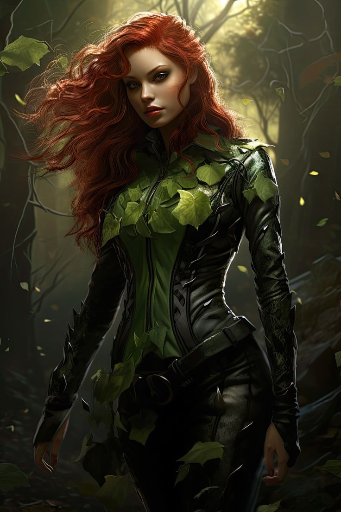
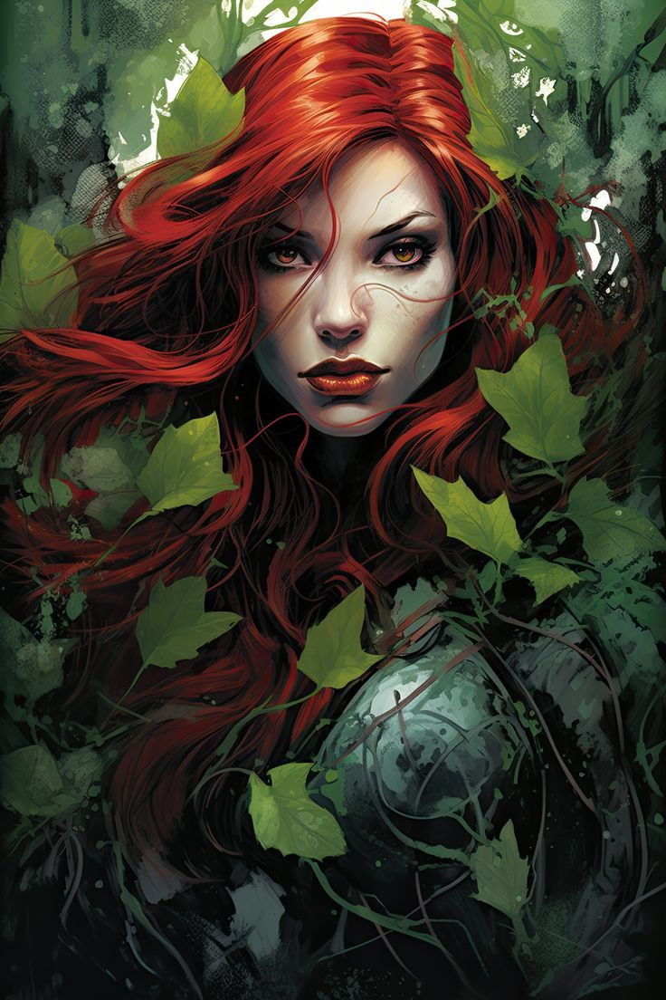
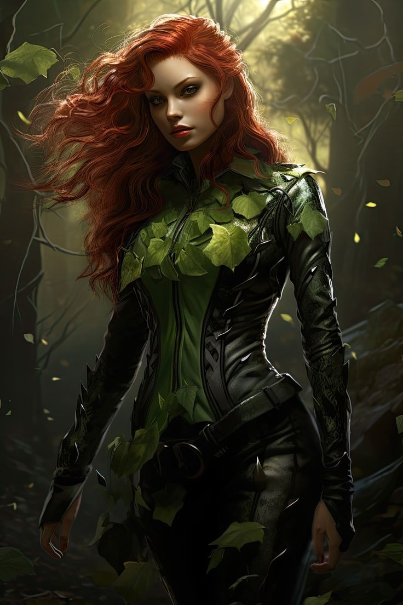
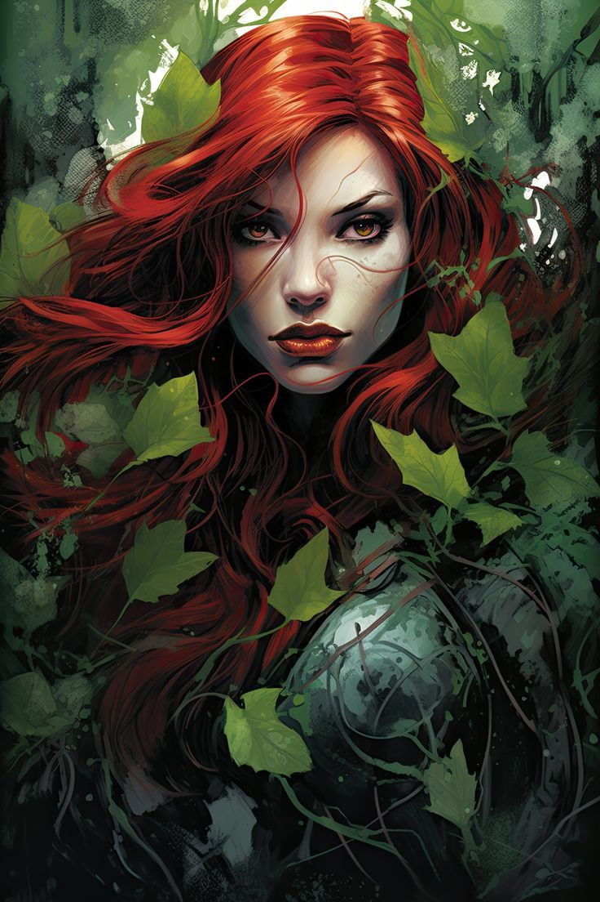
Diretor: Henry O'conell não se sabe muito sobre o diretor apenas que ele tem uma grande bipolaridade e as vezes pode não bater muito bem da cabeça ele foi um dos primeiros escolhidos que apareceram,também da aula para a turma @｡ﾟ☠️・Sobretoure e dizem que algumas de suas magias ele mesmo criou, no seu primeiro dia na academia ele chegou ensanguentado e com medo havia recebido um trote no mundo mortal onde derrubaram sangue de porco nele por conta de sua maldição e no dia em que foi receber sua marca de clã as 6 apareceram em suas costas e hoje ele lidera a Curse School
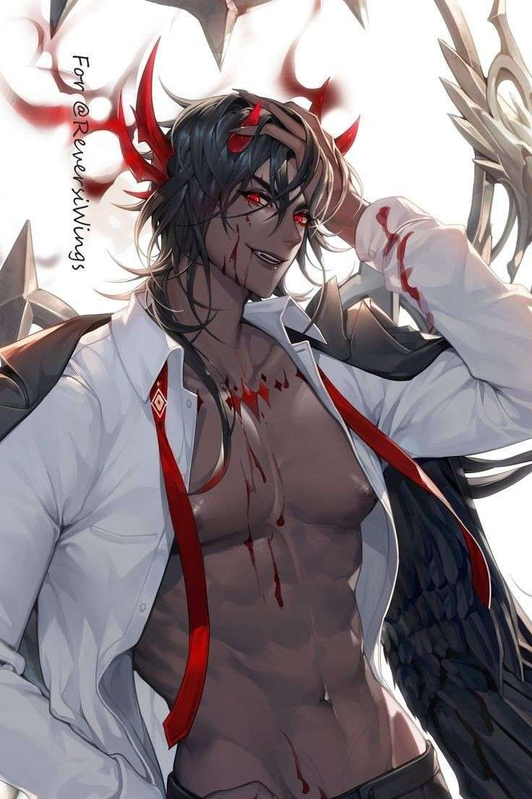•｡ﾟ☄️・Professor: Poppy Aurélia, a mais nova professora dos ｡ﾟ👥・Modifiers , foi a primeira pessoa a chegar à sua ala e foi a primeira agraciada com ambas as habilidades, trabalhando com a parte mental e a parte de transformação. Poppy aparenta ter algum problema que poucos sabem... É bastante agradável e doce, e por mais que tenha uma aparência infantil, é mais velha do que imaginam. Alguns segundanistas sabem o que aconteceu com essa professora, mas nenhum daqueles que revelou seu segredo viveu para contar a história.
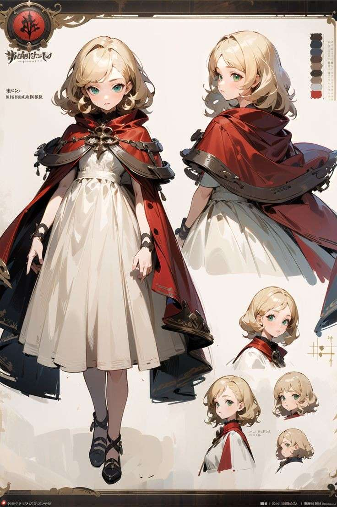Isabelle, Izzie pra os mais íntimos é a professora que rege os @｡ﾟ💠・Runnes atualmente. Uma mulher equilibrada que tenta concilia seu tempo com as aulas e missões que aparecem com certa frequência A professora não fala muito sobre sua vida pessoal para as outras pessoas mantendo-a em secreto, assim pode proteger seus segredos. Principalmente os segredos da turma na qual somente os alunos detém o conhecimento Sim, conciliei as ruas com minha personagem preferida kkkk
Aurora e Aura, duas pessoas completamente diferentes que ocupam a mesma mente, o mesmo corpo. Alguns dizem ser dupla personalidade, o que pode até ser já que são totalmente distintas uma da outra, tanto em pensamentos quanto atitudes para com os outros.
Aurora > a mais pulso firme das duas, da as aulas mais grosseiramente, fazendo oa alunos aprenderem na pressão queiram eles ou não
Aura > a mais delicada, um amor. Ama dar as aulas principalmente para turma cheia, adora o fato de saber que trouxe conhecimento aos seus pequenos pupilos
Responsável pelo clã @｡ﾟ🍃・Naturalis, elas trabalham juntas pra um bem maior (ou não) de seu povo
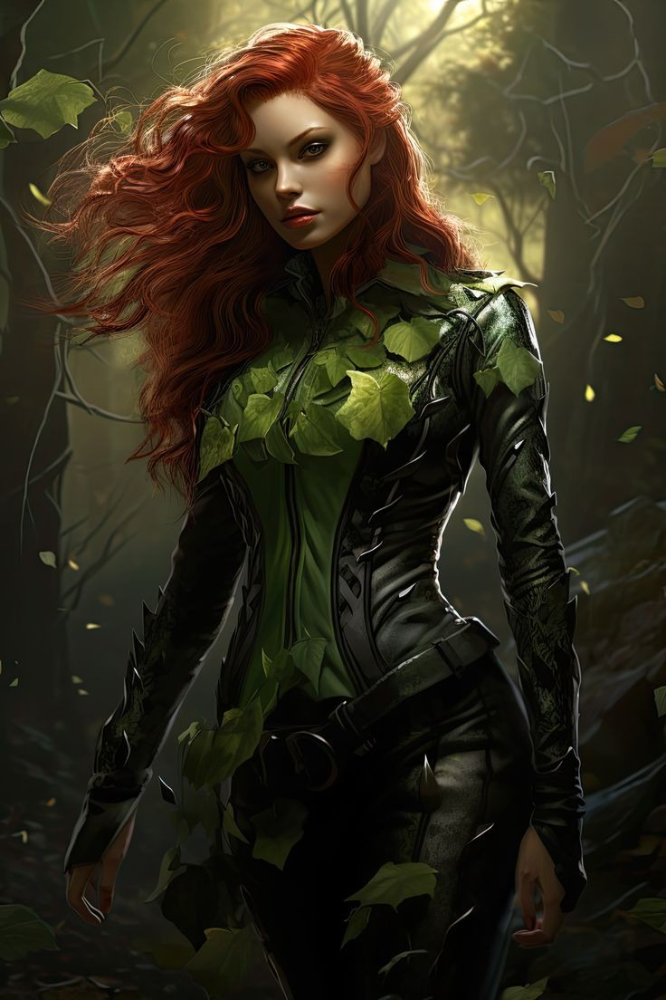
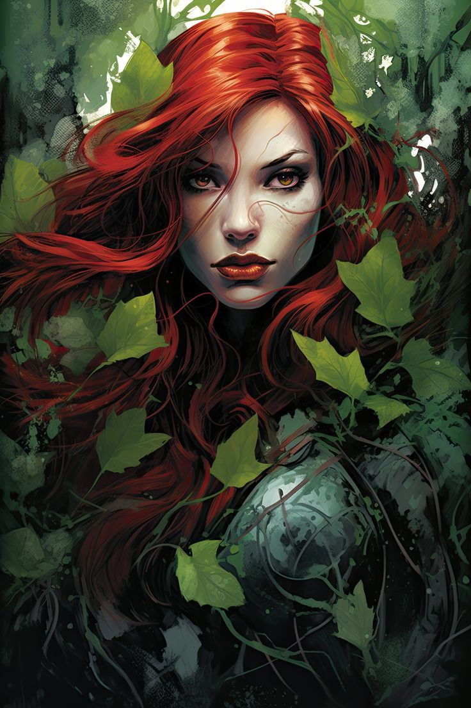
⎯⎯︎︎︎ 𝐓𝐞𝐚𝐜𝐡𝐞𝐫: desde que se entende por gente a mulher sempre teve grande afinidade com magia. Obviamente tendo suas preferências voltadas a feitiçaria e uso de grimorios. Quando mais nova Ambrose já fora uma aluna da Curse school e agora na atualidade leciona na turma de ｡ﾟ🪄・Magicians , turma cuja ela um dia já foi aluna.
𝐀 bruxa é uma mulher ao todo agradável, ela é gentil, brincalhona e disposta a ajudar seus alunos naquilo que prescisam. Tem um humor de certa forma questionável, e as vezes faz piadinhas em momentos inoportunos. Porém não deixa de uma pessoa bem séria e pulso firme quando necessário.
౨ 🩸꒱ ˚₊ 𝐕iolette 𝐏earl 𝐀mbrose ✧ ˚₊
 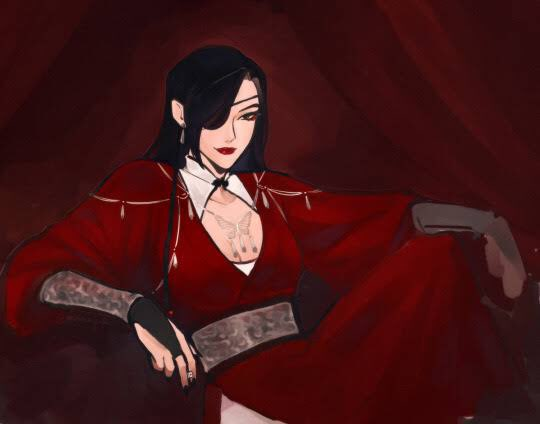
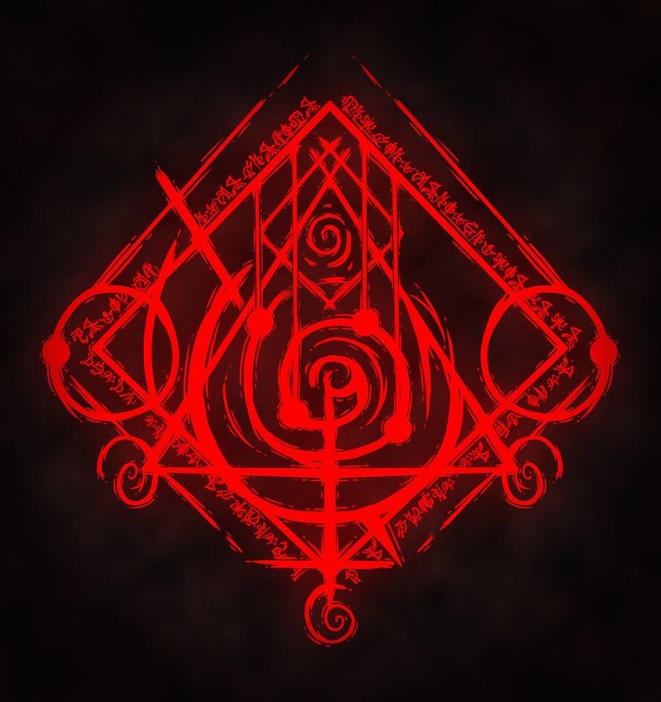
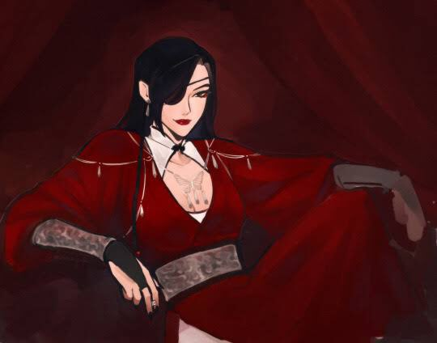
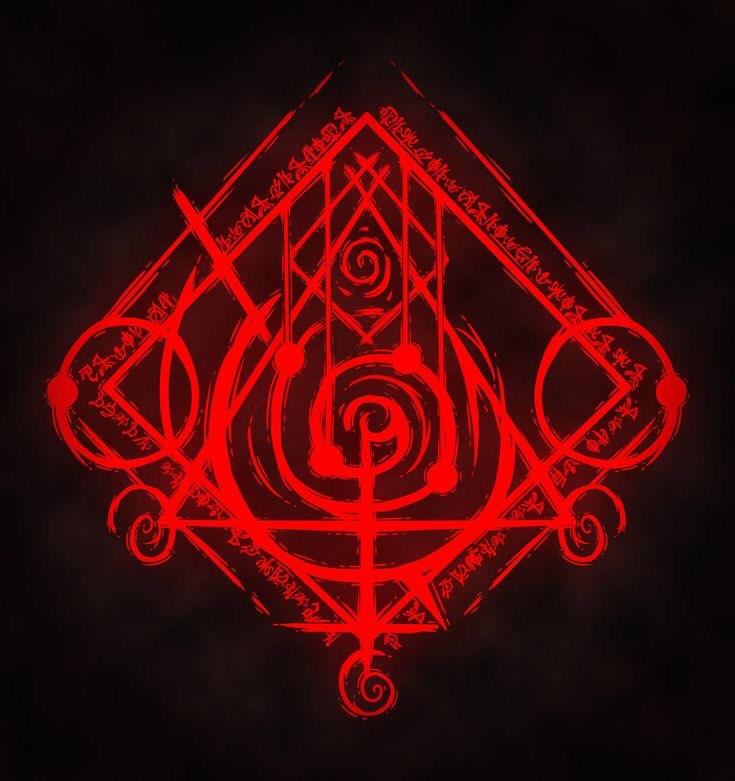